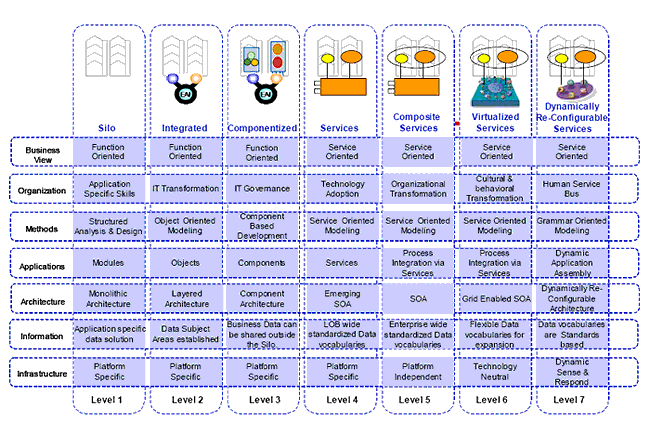

그래서 과연 CMMI 레벨을 높게 받았다고 해서 그 회사가 더 높은 품질의 IT서비스를 제공했는지에 대해 자문해보자면 calmglow의 입장에서보면 글쎄올시다였고... 자격증이란게 다 그렇지 뭐 하는 생각만 품게 되었더랬다.
잘 모르겠지만 CMMI level을 높게 받은 후 회사가 더 나은 품질 개선이 되었는지도 모르겠다. 그런데 그게 어쨌다는 것일까? CMMI는 엄밀히 말하자면 소프트웨어 프로젝트 프로세스에 대한 평가지표다. 기업이 정말 관심을 가지고 핵심역량을 키워야 하는, IT프로젝트를 끊임없이 해야만 했던, 소프트웨어보다 훨씬 빠르게 급변하는 비즈니스 환경에서의 비즈니스 프로세스에 대한 평가지표는 아니다. 과연 CMMI level 5로 만들어진 소프트웨어가 비즈니스 프로세스 변화에 따른 요건을 유연하고 느슨하게 대처하는 것이 가능할까? 결론은 꼭 그럴 필요는 없다는 것이다.
왜 이렇게 CMMI 이야기를 늘어놓았냐면, 유연한 비즈니스 프로세스, 그리고 그 유연한 비즈니스 프로세스와 소프트웨어를 느슨하게 연결하는 게 요새 IT에서는 매우 매우 중요한 반면, 기업 입장에서는 기업이 현재 가지고 있는 IT자산이나 조직이 제대로 느슨하면서도 유연하게 비즈니스 요건들을 만족시켜 줄 준비가 되어 있는지를 판단할 정량화된 지표가 별로 없다는 것이다.
그래서 각 IT나 컨설팅 회사들이 내놓은 SOA Maturity Model이 있다.
IBM의 Maturity Model인 SIMM(Services Integration Maturity Model)을 살펴보자.

총 7개의 단계로 나누어 기업의 SOA에 대한 성숙도를 표현하고 있다. IBM의 SIMM은 Opengroup이라는 표준화단체에 의해 SOA를 위한 성숙도 측정 매트릭으로 제정되어 OSIMM라고 이름만 바뀌어서 사용되고 있다. 이 단체에는 IBM뿐만 아니라 BEA, HP등의 굵직한 공룡 IT벤더들이 같이 참여하고 있으니 SOA 표준 성숙도 측정 모델이라고 봐도 무방할 거 같다.
Calmglow가 조금 좋아하는 Kunal Mittal이라는 컨설턴트는 다음과 같이 Service Oriented Architecture Maturity Model을 정의한다.
Levels | Characteristics | Impacts |
|---|---|---|
Level 1: | No formal software-development process Minimal documentation of architecture No communication across project teams | No architectural consistency across projects Difficult to understand and modify resulting systems Minimal reusable artifacts Teams “re-invent the wheel” for each project |
Level 2: | Some level of architectural documentation Architecture enforced within a project team Ad hoc communication of architecture across project teams | Minimal improvements over Level 1 Some successful practices are repeatable Recognition that an EA effort might be valuable |
Level 3: | An EA team is in place that defines a reference architecture and some software-development practices Project teams are encouraged but not rewarded to use this architecture EA does not meet all the needs of each LOB | Difficult to get consensus: EA teams and project teams don't work well together Architecture maintenance is a big concern Architecture has a shelf life of 6-12 months at most |
Level 4: | SOA is considered the end point for the architecture initiative LOBs and EA teams work together to define an SOA Support and governance models are in place LOBs are rewarded to expose and consume services | Up-front costs seem to be prohibitive Reduces risk of project delays resulting from inconsistencies in the architecture layer SOA within the organization seems to get some momentum |
Level 5: | SOA becomes a starting point Organizations want to explore service orientation with their customers, suppliers, and partners Continuous architecture optimization | Business agility Interoperates with services from customers, partners, suppliers, and others Faster time-to-market Lower Total Cost of Ownership (TCO) |
Sonic에서 주장하는 SOA 성숙도 모델은 또 다음과 같다.

이밖에도 상당히 많은 SOA 전문가들이 저마다의 성숙도 모델이랍시고 내놓았지만 정작 중요한 건 그저 멋진 차트가 아니라 제대로 성숙도를 평가할만한 정량화시킬 수 있는 잣대를 얼마나 많이 제공하고 그것이 과연 적절하고 위험요소 없이 기업들에게 비전을 제시해서 투자할만한 값어치를 주느냐가 아닐까 싶다.
어찌되었건 현재의 자신을 제대로 알고 미래를 위해 투자할 수 있는 지표를 누군가가 제시해준다는 것은 반가운 일이다. 대충은 그래도 지금 내가 어디있고 어디로 갈 지를 알았으니 반갑긴 하겠지만 문제는 지금부터 시작이다. 그렇다면 어떻게 다시 레벨을 높일까? 예전에 수많은 기업들이 CMMI 레벨을 올린다고 몇십억 투자하듯, 이번엔 어떻게 해야 많은 기업들이 돈 펑펑 써가며 SOA 성숙도를 높이기 위해 안달날 수 있을까?
먹고 사는 얘기말고 간만에 SOA얘기를 풀어내보니 뭔가 기분이 좋다. 이 기분 그대로 당분간 글을 좀 써봐야겠구나. 잇힝
공유하기 버튼
|
|


최근 덧글